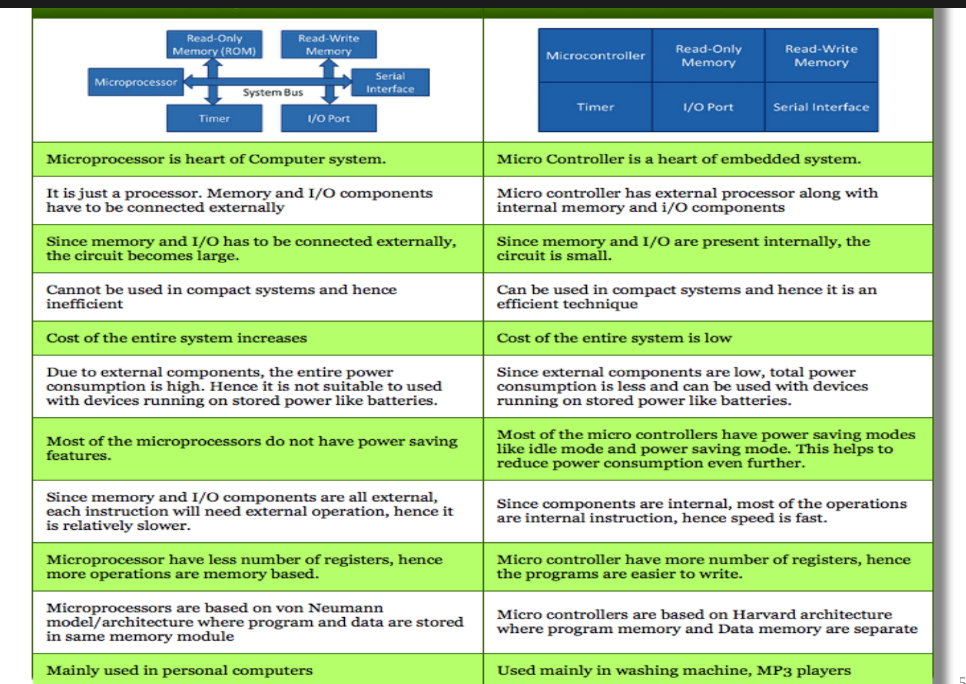
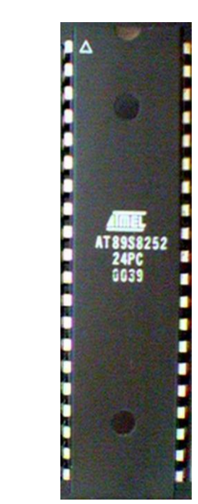
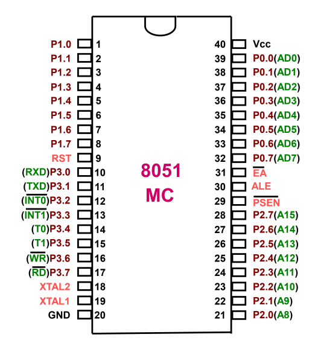
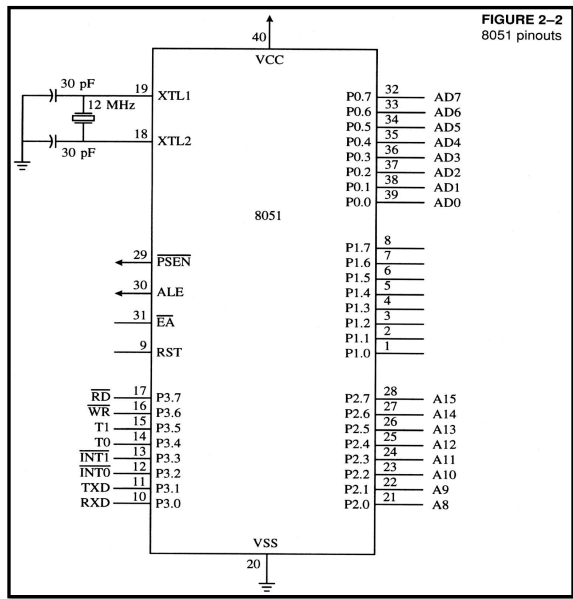
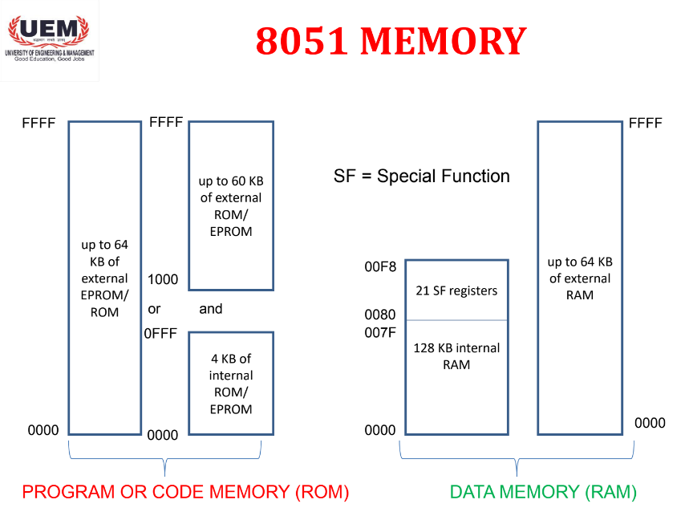
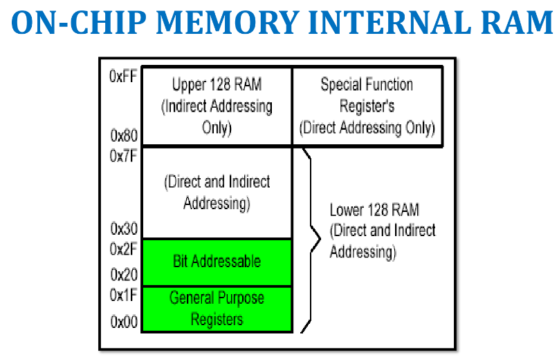
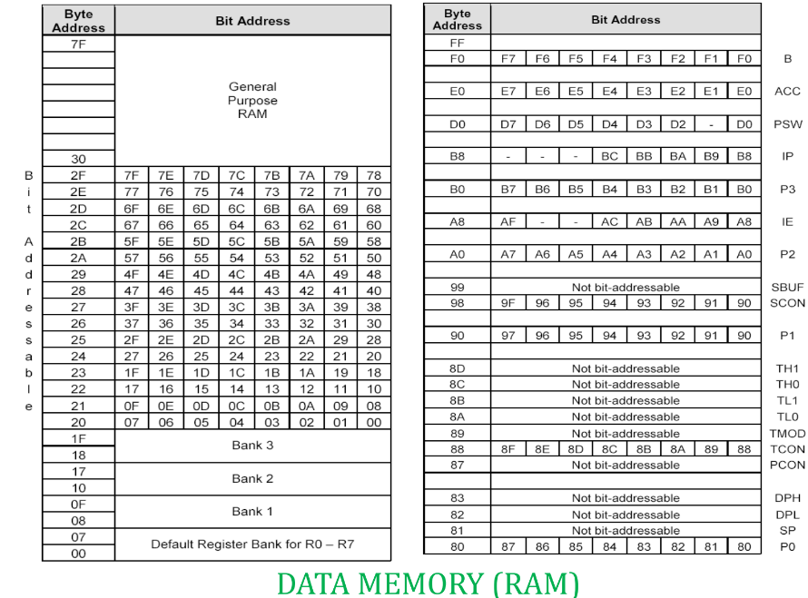

| Microprocessor | Microcontroller |
|---|---|
| Heart of a General Purpose Computer system. | Heart of an Embedded System. |
| Only CPU on-chip; memory and I/O connected externally. | CPU, internal RAM, ROM, timers, and I/O ports integrated on a single IC. |
| Large external circuit size; higher power consumption. | Compact circuit; low power consumption; battery-friendly. |
| Based on Von Neumann architecture (unified code & data). | Based on Harvard architecture (separate code and data memory spaces). |






The standard 8051 on-chip data RAM contains 128 bytes mapped from address 00H to 7FH, partitioned into three functional regions:
When all general-purpose registers R0–R7 are occupied, programmers utilize RAM addresses 30H–7FH as a high-speed scratchpad. Unlike registers, these locations can be read and written directly or indirectly without bank switching.
MOV P1, #55H ; Initialize P1 with pattern 01010101B
MOV 32H, #200 ; Load loop counter (200 decimal = C8H) into RAM 32H
LOP1: CPL P1 ; Toggle all bits of Port 1
ACALL DELAY ; Wait for delay subroutine
DJNZ 32H, LOP1 ; Decrement RAM 32H; jump to LOP1 if not zero!Key Takeaway: The instruction DJNZ direct, rel can directly decrement any internal RAM location, allowing programmers to run counters directly in RAM without exhausting R0–R7.
An Addressing Mode defines the mechanism the CPU utilizes to access an operand or source/destination data location. The 8051 supports five fundamental addressing modes:
In immediate addressing, the source operand is an explicit constant embedded directly within the instruction opcode stream in ROM. The data byte or word is preceded by the pound symbol #.
MOV A, #25H, MOV R4, #62, MOV B, #40H.MOV DPTR, #4521H (which loads DPH = 45H and DPL = 21H).FFFFH). Writing MOV DPTR, #68975 produces an assembler syntax error!EQU directive to assign descriptive symbols to immediate values:
Count EQU 30 ; Assign constant 30 (1EH) to symbol Count
...
MOV R4, #Count ; R4 = 1EH
MOV DPTR, #MYDATA ; DPTR points to code ROM label MYDATA (e.g., 0200H)
ORG 200H
MYDATA: DB "America"MOV P1, #55H.Register addressing involves manipulating data stored directly within CPU internal registers (A, B, R0–R7, DPTR, DPH, DPL).
MOV A, R0 (copy R0 into A), MOV R2, A, ADD A, R5, MOV R6, A.MOV DPTR, #25F5H followed by MOV R7, DPL (R7 = F5H) and MOV R6, DPH (R6 = 25H).MOV DPTR, A produces a fatal assembly error because DPTR is 16-bit while A is 8-bit.MOV R4, R7 is illegal! To copy R7 to R4, data must intermediate through Accumulator: MOV A, R7 then MOV R4, A.In direct addressing, the instruction operand specifies the absolute 8-bit RAM or SFR memory address. Notice there is no pound sign (#).
MOV R0, 40H copies the contents stored at internal RAM location 40H into R0 (contrast with MOV R0, #40H which loads the literal value 40H).MOV 56H, A saves the Accumulator contents into RAM address 56H.MOV A, 04H is identical to MOV A, R4 (when Bank 0 is active, RAM address 04H corresponds to Register R4).MOV 0E0H, #55H is identical to MOV A, #55H.
MOV 0F0H, R0 is identical to MOV B, R0.
PUSH A is strictly illegal and will not assemble!
PUSH 0E0H (or PUSH ACC).
PUSH 05H.
PUSH 05 ; Push R5 onto stack (SP increments, RAM[SP] = R5)
PUSH 0E0H ; Push Register A onto stack (PUSH A is illegal!)
POP 0F0H ; Pop top of stack into Register B (B now equals A)
POP 02 ; Pop top of stack into Register R2 (R2 now equals R5)A register is employed as an active pointer holding the memory address of the target operand. In assembly, pointer indirection is denoted by the at-sign @.
MOV A, @R0 (valid: moves data from RAM address pointed to by R0 into A).
MOV @R1, B (valid: moves B into RAM address pointed to by R1).
MOV A, @R2 (fatal assembly error: R2 cannot be a pointer!).
; (a) Direct Addressing (Static, no pointer)
MOV A, #55H
MOV 40H, A
MOV 41H, A
; (b) Register Indirect without Loop
MOV A, #55H
MOV R0, #40H ; Load pointer R0 with start address 40H
MOV @R0, A ; RAM[40H] = 55H
INC R0 ; R0 increments to 41H
MOV @R0, A ; RAM[41H] = 55H
; (c) Register Indirect with DJNZ Loop
MOV A, #55H
MOV R0, #40H ; Load RAM pointer
MOV R2, #02 ; Counter = 2 iterations
AGAIN: MOV @R0, A ; Copy 55H to RAM[R0]
INC R0 ; Advance pointer
DJNZ R2, AGAIN ; Repeat until counter = 0 CLR A ; A = 0
MOV R1, #60H ; Pointer R1 = 60H
MOV R7, #16 ; Counter = 16 locations (60H to 6FH)
AGAIN: MOV @R1, A ; Clear byte pointed to by R1
INC R1 ; Increment pointer
DJNZ R7, AGAIN ; Loop until R7 = 0 MOV R0, #35H ; Source pointer
MOV R1, #60H ; Destination pointer
MOV R3, #10 ; Counter = 10 bytes
BACK: MOV A, @R0 ; Read byte from source RAM
MOV @R1, A ; Write byte to destination RAM
INC R0 ; Advance source pointer
INC R1 ; Advance destination pointer
DJNZ R3, BACK ; Loop 10 timesIndexed addressing is utilized to read fixed constant lookup tables, string literals, and calibration factors stored in Program ROM. The target physical address is calculated as the sum of a base pointer register plus an 8-bit offset index in Accumulator A.
ORG 0000H
MOV DPTR, #200H ; DPTR = 200H (base table address)
CLR A ; A = 0 (offset 0 -> character 'U')
MOVC A, @A+DPTR ; Read ROM[200H]; A = 55H ('U')
MOV R0, A ; R0 = 55H
INC DPTR ; DPTR = 201H
CLR A ; A = 0 (offset 0 -> character 'S')
MOVC A, @A+DPTR ; Read ROM[201H]; A = 53H ('S')
MOV R1, A ; R1 = 53H
INC DPTR ; DPTR = 202H
CLR A ; A = 0
MOVC A, @A+DPTR ; Read ROM[202H]; A = 41H ('A')
MOV R2, A ; R2 = 41H
HERE: SJMP HERE
ORG 200H
MYDATA: DB "USA" ; String burned in code space at 0200H
END ORG 0000H
MOV DPTR, #300H ; Base pointer to square lookup table
MOV A, #0FFH
MOV P1, A ; Configure Port 1 as input port
BACK: MOV A, P1 ; Read input number x (0 to 9) from Port 1
MOVC A, @A+DPTR ; Fetch pre-computed square x^2 from ROM table!
MOV P2, A ; Output result to Port 2 LEDs/DAC
SJMP BACK ; Repeat indefinitely
ORG 300H
XSQR_TABLE: DB 0, 1, 4, 9, 16, 25, 36, 49, 64, 81
ENDThe 8051 implements a strict Harvard architecture with completely independent physical code and data spaces. When an application requires external RAM (up to 64KB), the MOVX (Move External) instruction is mandatory:
MOVX A, @DPTR : Reads 1 byte from 16-bit external data address in DPTR into A.MOVX @DPTR, A : Writes 1 byte from A to 16-bit external data address in DPTR.MOVX A, @R0 / MOVX @R0, A : 8-bit paged external RAM access (Port 0 carries address/data, Port 2 carries page).Select an assembly instruction below to analyze its addressing mode classification, machine byte length, machine cycle latency, data-flow path, and legal syntax verification:
Data Flow Path:
The immediate constant 25H is encoded directly into byte 2 of the machine instruction. Upon fetching the opcode (74H), the CPU reads 25H in the subsequent cycle and latches it directly into register A.
Special Function Registers (SFRs) occupy the upper memory address space from 80H to FFH. These registers configure, monitor, and drive all internal peripherals: I/O ports, timers/counters, serial UART, interrupt controller, and CPU status flags.
| Symbol | Full Register Name | Byte Address | Bit-Addressable? | Individual Bit Address Range | Reset Value |
|---|---|---|---|---|---|
| ACC* (A) | Accumulator (Math & Logic Engine) | 0E0H | YES (Bit-Addressable) | E0H to E7H | 00H |
| B* | B Register (Multiply & Divide Register) | 0F0H | YES (Bit-Addressable) | F0H to F7H | 00H |
| PSW* | Program Status Word (Flags & Bank Select) | 0D0H | YES (Bit-Addressable) | D0H to D7H | 00H |
| SP | Stack Pointer | 81H | NO (Byte-Only) | None | 07H |
| DPL | Data Pointer Low Byte | 82H | NO (Byte-Only) | None | 00H |
| DPH | Data Pointer High Byte | 83H | NO (Byte-Only) | None | 00H |
| P0* | Port 0 Latch (AD0–AD7 Multiplexed Bus) | 80H | YES (Bit-Addressable) | 80H to 87H | FFH |
| P1* | Port 1 Latch (Dedicated 8-bit Quasi-Bidirectional I/O) | 90H | YES (Bit-Addressable) | 90H to 97H | FFH |
| P2* | Port 2 Latch (A8–A15 High-Order Address Bus) | 0A0H | YES (Bit-Addressable) | A0H to A7H | FFH |
| P3* | Port 3 Latch (Alternate Functions: RxD, TxD, INT0, INT1, T0, T1, WR, RD) | 0B0H | YES (Bit-Addressable) | B0H to B7H | FFH |
| IP* | Interrupt Priority Control | 0B8H | YES (Bit-Addressable) | B8H to BFH (Lower 5 bits) | XXX00000B |
| IE* | Interrupt Enable Control (EA, ES, ET1, EX1, ET0, EX0) | 0A8H | YES (Bit-Addressable) | A8H to AFH | 0XX00000B |
| TMOD | Timer/Counter Mode Control (GATE, C/T, M1, M0 for T0/T1) | 89H | NO (Byte-Only) | None | 00H |
| TCON* | Timer/Counter Control (TF1, TR1, TF0, TR0, IE1, IT1, IE0, IT0) | 88H | YES (Bit-Addressable) | 88H to 8FH | 00H |
| TL0 / TH0 | Timer 0 Low Byte / High Byte Counter | 8AH / 8CH | NO (Byte-Only) | None | 00H |
| TL1 / TH1 | Timer 1 Low Byte / High Byte Counter | 8BH / 8DH | NO (Byte-Only) | None | 00H |
| SCON* | Serial Port Control (SM0, SM1, SM2, REN, TB8, RB8, TI, RI) | 98H | YES (Bit-Addressable) | 98H to 9FH | 00H |
| SBUF | Serial Port Data Buffer (Physical Tx/Rx Registers) | 99H | NO (Byte-Only) | None | Indeterminate |
| PCON | Power Control (SMOD Baud Rate Doubler, PD, IDL) | 87H | NO (Byte-Only) | None | 0XXX0000B |
; (a) Using Mnemonic Register Names:
MOV A, #55H ; Load immediate 55H into A
MOV P1, A ; Output 55H to Port 1
MOV P2, A ; Output 55H to Port 2
; (b) Using Absolute Hexadecimal SFR Addresses:
; From Table: P1 address = 90H; P2 address = 0A0H
MOV A, #55H ; A = 55H
MOV 90H, A ; Output 55H to P1 via direct address 90H
MOV 0A0H, A ; Output 55H to P2 via direct address 0A0HNote on Hex Syntax: When a hexadecimal address begins with a letter (A through F), it must be prefixed with a leading zero (e.g., 0A0H instead of A0H) so the assembler parses it as a numerical constant rather than a variable symbol.
A crowning architectural hallmark of the 8051 is its dedicated hardware Boolean Processing Engine. While conventional microprocessors must execute cumbersome multi-instruction mask-and-shift routines (`AND`, `OR`, `XOR`) to inspect or alter a single I/O pin or flag, the 8051 provides atomic 1-cycle single-bit instructions capable of setting, clearing, inverting, and testing individual bits directly!
A block of 16 bytes of internal RAM (from byte address 20H to 2FH) is wired to the bit processing engine. Because each byte consists of 8 bits, this block yields exactly 128 bit addresses numbered from 00H to 7FH:
To determine exactly which RAM byte and bit position an arbitrary bit address $B$ ($00\text{H} \le B \le 7\text{F}\text{H}$) belongs to, evaluate:
$$\text{RAM Byte Address (Hex)} = 20\text{H} + \left\lfloor \frac{B}{8} \right\rfloor$$ $$\text{Bit Position inside Byte} = \text{D}_k \quad \text{where } k = B \pmod 8$$| Single-Bit Instruction | Hex Bit Address ($B$) | Quotient $\lfloor B/8 \rfloor$ | Remainder $B \pmod 8$ | Target RAM Byte | Target Bit Position |
|---|---|---|---|---|---|
SETB 42H |
42H (66 decimal) | $66 / 8 = 8$ (08H) | $66 \pmod 8 = 2$ | $20\text{H} + 8 = \mathbf{28H}$ | D2 of RAM 28H |
CLR 67H |
67H (103 decimal) | $103 / 8 = 12$ (0CH) | $103 \pmod 8 = 7$ | $20\text{H} + \text{0CH} = \mathbf{2CH}$ | D7 of RAM 2CH |
CLR 0FH |
0FH (15 decimal) | $15 / 8 = 1$ (01H) | $15 \pmod 8 = 7$ | $20\text{H} + 1 = \mathbf{21H}$ | D7 of RAM 21H |
SETB 28H |
28H (40 decimal) | $40 / 8 = 5$ (05H) | $40 \pmod 8 = 0$ | $20\text{H} + 5 = \mathbf{25H}$ | D0 of RAM 25H |
CLR 12 |
12 decimal (0CH) | $12 / 8 = 1$ (01H) | $12 \pmod 8 = 4$ | $20\text{H} + 1 = \mathbf{21H}$ | D4 of RAM 21H |
SETB 05 |
05 decimal (05H) | $5 / 8 = 0$ (00H) | $5 \pmod 8 = 5$ | $20\text{H} + 0 = \mathbf{20H}$ | D5 of RAM 20H |
CRITICAL EXAM TRAP: Notice that the numerical range 00H to 7FH represents two completely different entities in the 8051:
MOV A, 25H).SETB 25H).| Mnemonic | Full Name | Function Description | Machine Bytes / Cycles |
|---|---|---|---|
SETB bit |
Set Bit | Forces specified bit to logic high (1). | 2 Bytes / 1 MC |
CLR bit |
Clear Bit | Forces specified bit to logic low (0). | 2 Bytes / 1 MC |
CPL bit |
Complement Bit | Inverts state: $\text{bit} = \text{NOT}(\text{bit})$. | 2 Bytes / 1 MC |
JB bit, target |
Jump if Bit Set | Jumps to relative target address if bit $= 1$. | 3 Bytes / 2 MC |
JNB bit, target |
Jump if Bit Clear | Jumps to relative target address if bit $= 0$. | 3 Bytes / 2 MC |
JBC bit, target |
Jump if Bit Set & Clear | Jumps to target if bit $= 1$, then atomically clears bit to $0$. | 3 Bytes / 2 MC |
Because physical I/O ports P0, P1, P2, and P3 are bit-addressable SFRs, individual pins can be controlled independently without modifying adjacent pins:
SETB P1.5).SETB P1.5 compiles directly to bit address 95H:
The Program Status Word (PSW at D0H) contains CPU status flags and bank selector bits:
| RS1 (PSW.4) | RS0 (PSW.3) | Active Register Bank | Physical RAM Address Range |
|---|---|---|---|
| 0 | 0 | Bank 0 (Default upon RESET) | 00H to 07H |
| 0 | 1 | Bank 1 | 08H to 0FH |
| 1 | 0 | Bank 2 | 10H to 17H |
| 1 | 1 | Bank 3 | 18H to 1FH |
CLR PSW.3 ; RS0 = 0
SETB PSW.4 ; RS1 = 1 (RS1:RS0 = 10B -> Selects Register Bank 2)
MOV R7, A ; R7 now writes to physical RAM location 17H!While the 8051 has JC and JNC for the carry flag, it has no direct `JOV` instruction. Instead, programmers test the bit-addressable OV flag (bit PSW.2 / D2H) using JB:
JB PSW.2, TARGET ; Jump to TARGET if Overflow Flag (OV) is set to 1! MOV C, P1.7 ; Copy logic state of pin P1.7 into Carry Flag C
MOV 05H, C ; Copy Carry Flag C into bit address 05H (D5 of RAM 20H) CLR 06 ; Clear RAM bit address 06
CLR 07 ; Clear RAM bit address 07
JNB P1.2, OVER ; If P1.2 is 0, skip set
SETB 06 ; If P1.2 is 1, set RAM bit 06
OVER: JNB P1.3, NEXT ; If P1.3 is 0, skip set
SETB 07 ; If P1.3 is 1, set RAM bit 07
NEXT: ...Recall that bit D0 of any binary integer indicates whether the number is even ($D_0 = 0$) or odd ($D_0 = 1$):
MOV A, 37H ; Load RAM location 37H into Accumulator
JNB ACC.0, YES ; Is bit D0 equal to 0? If so, number is even -> Jump!
INC A ; If odd, increment to make it even
YES: MOV P2, A ; Output even number to Port 2LED BIT P2.0 ; Assign symbol LED to pin P2.0
SW BIT P1.7 ; Assign symbol SW to pin P1.7
HERE: MOV C, SW ; Read switch state into Carry
MOV LED, C ; Drive LED with switch state
SJMP HEREOVEN_HOT BIT P2.3 ; Logic 1 indicates oven overheating
BUZZER BIT P1.5 ; Connected to acoustic piezo alarm
HERE: JNB OVEN_HOT, HERE ; Continuously monitor oven
ACALL DELAY
CPL BUZZER ; Toggle buzzer to generate audible alarm
ACALL DELAY
SJMP HERESW EQU P1.7 ; SW equated to P1.7 (or direct bit address 97H)
MYDATA EQU P2 ; MYDATA equated to P2 (or direct byte address 0A0H)
HERE: MOV C, SW
JC OVER
MOV MYDATA, #'0' ; Send ASCII '0' if SW = 0
SJMP HERE
OVER: MOV MYDATA, #'1' ; Send ASCII '1' if SW = 1
SJMP HEREClick any bit cell in the matrix below or type a bit/byte address in the search box to decode its physical byte location, bit index, register symbol, and generated assembly mnemonics:
Belongs to RAM byte 28H ($20\text{H} + \lfloor 66/8 \rfloor = 28\text{H}$), bit position D2 ($66 \pmod 8 = 2$). Executing SETB 42H sets bit 2 of RAM byte 28H without affecting bits D0, D1, D3–D7.
The standard 8051 contains 128 bytes of on-chip RAM (00H–7FH). However, enhanced members of the MCS-51 family such as the 8052 feature 256 bytes of on-chip data RAM. This extra 128-byte block is mapped to addresses 80H through FFH—the exact same numerical range assigned to the SFRs!
To avoid hardware collisions in the 8052 between the Upper 128-byte RAM and the Special Function Registers, the CPU decodes the addressing mode utilized by the instruction:
MOV 90H, #55H (or MOV P1, #55H) writes directly to the Port 1 SFR latch.
MOV @R0, A or MOV A, @R1) writes to or reads from the internal physical RAM, completely bypassing the SFR!
ORG 0000H
MOV DPTR, #MYDATA ; DPTR points to lookup string in code ROM
MOV R1, #80H ; Pointer R1 = 80H (targets 8052 upper RAM via indirection!)
B1: CLR A ; A = 0
MOVC A, @A+DPTR ; Read character from program ROM
MOV @R1, A ; Store into upper RAM address pointed to by R1!
MOV P0, A ; Echo copy to Port 0 (uses direct addressing)
JZ EXIT ; If character is NULL terminator (0), exit!
INC DPTR ; Advance ROM pointer
INC R1 ; Advance Upper RAM pointer
SJMP B1 ; Loop until string finished
EXIT: SJMP $ ; Halt in infinite loop
ORG 0300H
MYDATA: DB "The Promise of World Peace", 0
ENDCrucial Insight: In the instruction MOV @R1, A where R1 = 80H, the byte enters physical scratchpad RAM location 80H. It does NOT overwrite Port 0 (which also resides at 80H), because Port 0 can only be altered through direct addressing (as demonstrated by MOV P0, A)!
AIM: Write an 8051 assembly program to load the Accumulator with 55H and complement it 700 times using nested loops.
| Address | Mnemonic | Machine Bytes | Functional Comment |
|---|---|---|---|
| 8000H | MOV A, #55H | 2 Bytes | Load 55H into Accumulator. |
| 8002H | MOV R1, #10H | 2 Bytes | Load outer loop counter (10 iterations). |
| 8004H | MOV R2, #70H | 2 Bytes | Load inner loop counter (70 iterations). Total = 10 × 70 = 700. |
| 8006H | CPL A | 1 Byte | Bitwise NOT / complement Accumulator. |
| 8007H | DJNZ R2, 8006H | 3 Bytes (Lab kit) | Decrement inner counter R2; jump if not zero. |
| 800AH | DJNZ R1, 8004H | 3 Bytes (Lab kit) | Decrement outer counter R1; reload R2 and repeat. |
| 800DH | LJMP 03 | 3 Bytes | Terminate program execution. |
| Address | Mnemonic | Comment |
|---|---|---|
| 8000H | MOV A, #01H | Load first 8-bit number into A. |
| 8002H | MOV R1, #02H | Load second 8-bit number into R1. |
| 8004H | ADD A, R1 | Add R1 to A. Result stored in A. |
| 8005H | MOV R2, A | Save sum into register R2. |
| 8006H | LJMP 03 | End program. |
AIM: Add F1H and 30H; detect carry flag and store Sum at external memory 8020H and Carry at 8021H.
| Address | Mnemonic | Comment |
|---|---|---|
| 8000H | MOV A, #F1H | First operand in A. |
| 8002H | MOV R0, #30H | Second operand in R0. |
| 8004H | MOV R1, #00H | Clear carry counter register R1. |
| 8006H | ADD A, R0 | F1H + 30H = 121H (CY flag set to 1). |
| 8007H | JNC 800A | Jump if no carry to 800AH. |
| 8009H | INC R1 | Carry generated: increment R1 (R1=01H). |
| 800AH | MOV DPTR, #8020H | Point DPTR to external RAM address 8020H. |
| 800DH | MOVX @DPTR, A | Write sum byte (21H) into external RAM. |
| 800EH | MOV A, R1 | Move carry count to Accumulator. |
| 800FH | INC DPTR | Point to 8021H. |
| 8010H | MOVX @DPTR, A | Write carry byte (01H) into external RAM. |
| 8011H | LJMP 03 | End program. |
Adds 1208H and A55DH (Lower bytes: 08H + 5DH = 65H; Higher bytes: 12H + A5H = B7H).
MOV 40H, #08H ; Number 1 low byte MOV 41H, #12H ; Number 1 high byte MOV 42H, #5DH ; Number 2 low byte MOV 43H, #A5H ; Number 2 high byte MOV A, 40H ; Add lower bytes ADD A, 42H ; A = 08H + 5DH = 65H MOV 44H, A ; Store lower result MOV A, 41H ; Add higher bytes ADD A, 43H ; A = 12H + A5H = B7H MOV 45H, A ; Store higher result LJMP 03
Repeating a sequence of instructions a set number of times is called a loop. In 8051 assembly, loops are driven by the DJNZ (Decrement and Jump if Not Zero) instruction:
DJNZ reg, Label; This program adds value 3 to the ACC ten times
MOV A, #0 ; A = 0, clear accumulator
MOV R2, #10 ; Load loop counter R2 = 10
AGAIN:
ADD A, #03 ; Add 03 to ACC
DJNZ R2, AGAIN ; Decrement R2; repeat until R2 = 0
MOV R5, A ; Save final sum in R5 (A = 30)
When an action must be repeated more than 255 times, a loop inside a loop (nested loop) is used. Multiple registers are employed to hold the inner and outer counts.
Since 700 > 255, we factor 700 into 10 × 70 = 700:
MOV A, #55H ; Initialize A with 55H
MOV R3, #10 ; R3 = 10 (Outer loop counter)
NEXT:
MOV R2, #70 ; R2 = 70 (Inner loop counter)
AGAIN:
CPL A ; Complement Accumulator bits
DJNZ R2, AGAIN ; Repeat inner loop 70 times
DJNZ R3, NEXT ; Decrement outer loop; repeat 10 times
Result: The inner instruction CPL A executes exactly 10 × 70 = 700 times.
Conditional jumps transfer control to a label only if a specified condition is satisfied. In 8051, all conditional jumps are SHORT JUMPS, meaning the target address must lie within -128 to +127 bytes of the program counter (PC).
JZ label : Jump if Accumulator is zero ($A = 0$).JNZ label : Jump if Accumulator is not zero ($A \neq 0$).JZ and JNZ evaluate only Register A; they cannot directly test R0–R7 or memory!; Determine if R5 contains the value 0. If so, put 55H in it:
MOV A, R5 ; Copy R5 to Accumulator
JNZ NEXT ; Jump if A is not zero
MOV R5, #55H ; If A was zero, load 55H into R5
NEXT: ...
JC label : Jump if Carry Flag is set ($CY = 1$).JNC label : Jump if No Carry ($CY = 0$).; Find the sum of 79H, F5H, and E2H. Store sum in R0 and carry in R5:
MOV A, #0 ; Clear A
MOV R5, A ; Clear R5 (carry accumulator)
ADD A, #79H ; A = 79H, CY = 0
ADD A, #0F5H ; A = 79H + F5H = 6EH, CY = 1
JNC N_2 ; Jump if CY = 0
INC R5 ; Carry generated: R5 = 1
N_2:
ADD A, #0E2H ; A = 6EH + E2H = 50H, CY = 1
JNC OVER ; Jump if CY = 0
INC R5 ; Carry generated: R5 = 2
OVER:
MOV R0, A ; Final result: R0 = 50H (low byte), R5 = 02H (high byte)
| Instruction | Condition Evaluated | Instruction Action |
|---|---|---|
JZ target |
$A = 0$ | Jump if Accumulator is zero |
JNZ target |
$A \neq 0$ | Jump if Accumulator is non-zero |
DJNZ Rn, target |
$Rn - 1 \neq 0$ | Decrement register; jump if not zero |
CJNE A, byte, target |
$A \neq \text{byte}$ | Compare A with memory byte; jump if unequal (sets CY if $A < \text{byte}$) |
CJNE Rn, #data, target |
$Rn \neq \text{data}$ | Compare register with immediate data; jump if unequal |
JC target |
$CY = 1$ | Jump if Carry flag is set |
JNC target |
$CY = 0$ | Jump if Carry flag is clear |
JB bit, target |
$\text{bit} = 1$ | Jump if direct bit is high (1) |
JNB bit, target |
$\text{bit} = 0$ | Jump if direct bit is low (0) |
JBC bit, target |
$\text{bit} = 1$ | Jump if direct bit is high, then clear bit to 0 |
If the target address lies outside $-128$ to $+127$ bytes, the assembler throws an "Address Out of Range" error.
| Line | PC | Opcode & Operand | Assembly Mnemonic | Jump Displacement Math |
|---|---|---|---|---|
| 04 | 0004 | 60 03 | JZ NEXT | PC after JZ is 0006H. Target = 0006H + 03H = 0009H (NEXT) |
| 09 | 000B | 50 05 | JNC OVER | PC after JNC is 000DH. Target = 000DH + 05H = 0012H (OVER) |
| 16 | 0013 | 50 F2 | JNC AGAIN | PC after JNC is 0015H. F2H is signed -14. Target = 0015H - 14 = 0007H (AGAIN) |
| 17 | 0015 | 80 FE | HERE: SJMP HERE | FEH is -2. Target = 0017H - 2 = 0015H (itself) |
The stack is a dynamic Last-In, First-Out (LIFO) section of internal data RAM utilized by the CPU to save return addresses during subroutine calls (`LCALL`/`ACALL`), handle interrupt contexts, and temporarily preserve register contents (`PUSH`/`POP`).
CRITICAL ARCHITECTURAL PITFALL: Upon hardware reset, the Stack Pointer automatically initializes to 07H:
Standard Solution - Relocating the Stack Pointer: At the very start of the program, relocate SP to the general-purpose scratchpad RAM area:
MOV SP, #2FH ; Initialize SP to 2FH
; The very first PUSH will now safely write into RAM address 30H! MOV R6, #25H ; R6 = 25H
MOV R1, #12H ; R1 = 12H
MOV R4, #0F3H ; R4 = F3H
PUSH 6 ; SP increments to 08H; RAM[08H] = 25H
PUSH 1 ; SP increments to 09H; RAM[09H] = 12H
PUSH 4 ; SP increments to 0AH; RAM[0AH] = F3H| Execution Stage | Stack Pointer (SP) | RAM 08H (Bank 1: R0) | RAM 09H (Bank 1: R1) | RAM 0AH (Bank 1: R2) |
|---|---|---|---|---|
| Power-On Reset | 07H | -- | -- | -- |
After PUSH 6 |
08H | 25H (Holds R6) | -- | -- |
After PUSH 1 |
09H | 25H | 12H (Holds R1) | -- |
After PUSH 4 |
0AH | 25H | 12H | F3H (Holds R4) |
Assume stack currently contains: RAM[08H] = 6CH, RAM[09H] = 76H, RAM[0AH] = F9H, RAM[0BH] = 54H, with SP pointing to 0BH:
POP 3 ; Read RAM[0BH] into R3 (R3 = 54H); SP decrements to 0AH
POP 5 ; Read RAM[0AH] into R5 (R5 = F9H); SP decrements to 09H
POP 2 ; Read RAM[09H] into R2 (R2 = 76H); SP decrements to 08HStep through the stack sequence below to watch the Stack Pointer (SP), RAM memory slots, active Register Bank, and live memory collision safety status:
Stack Pointer (SP): 07H
At reset, SP defaults to 07H in Register Bank 0. The next pushed byte will enter address 08H.
The time taken by the CPU to execute an instruction is measured in Machine Cycles (MC):
| Instruction | Machine Cycles (MC) | Execution Time (T = MC × 1.085 μs) |
|---|---|---|
MOV R3, #55H |
1 MC | 1 × 1.085 μs = 1.085 μs |
DEC R3 |
1 MC | 1 × 1.085 μs = 1.085 μs |
NOP |
1 MC | 1 × 1.085 μs = 1.085 μs |
DJNZ R2, target |
2 MC | 2 × 1.085 μs = 2.170 μs |
LJMP / SJMP |
2 MC | 2 × 1.085 μs = 2.170 μs |
RET |
2 MC | 2 × 1.085 μs = 2.170 μs |
MUL AB / DIV AB |
4 MC | 4 × 1.085 μs = 4.340 μs |
DELAY: MOV R3, #200 ; 1 MC
HERE: DJNZ R3, HERE ; 2 MC (repeats 200 times)
RET ; 2 MC
$$\text{Total Time} = [(200 \times 2) + 1 + 2] \times 1.085\,\mu\text{s} = [400 + 3] \times 1.085\,\mu\text{s} = \mathbf{436.255\,\mu\text{s}}$$
Coding Tip: An endless pause can be coded cleanly as HERE: SJMP HERE or simply SJMP $ (where $ denotes current PC).
DELAY: MOV R3, #250 ; 1 MC
HERE: NOP ; 1 MC
NOP ; 1 MC
NOP ; 1 MC
NOP ; 1 MC
DJNZ R3, HERE ; 2 MC (Loop takes 1+1+1+1+2 = 6 MC per iteration)
RET ; 2 MC
$$\text{Loop Time} = 250 \times 6 \times 1.085\,\mu\text{s} = 1627.5\,\mu\text{s}$$ $$\text{Total Delay} = 1627.5\,\mu\text{s} + (1 + 2) \times 1.085\,\mu\text{s} = \mathbf{1630.755\,\mu\text{s}}$$
DELAY: MOV R2, #200 ; 1 MC
AGAIN: MOV R3, #250 ; 1 MC
HERE: NOP ; 1 MC
NOP ; 1 MC
DJNZ R3, HERE ; 2 MC (Inner loop = 4 MC x 250 = 1000 MC = 1085 µs)
DJNZ R2, AGAIN ; 2 MC (Repeats inner loop 200 times)
RET ; 2 MC
$$\text{Total Delay} \approx [200 \times (250 \times 4 + 3)] \times 1.085\,\mu\text{s} \approx \mathbf{217,651\,\mu\text{s} \approx 0.218\text{ seconds}}$$
Advancements in CPU design have drastically reduced the clocks required per machine cycle:
| Chip Part Number | Manufacturer | Clocks / Machine Cycle | Cycle Time at 11.0592 MHz |
|---|---|---|---|
| AT89C51 | Atmel | 12 clocks | $1.085\,\mu\text{s}$ ($1085\text{ ns}$) |
| P89C54X2 | Philips (NXP) | 6 clocks (6T mode) | $0.542\,\mu\text{s}$ ($542\text{ ns}$) |
| DS5000 | Dallas Semi / Maxim | 4 clocks | $0.360\,\mu\text{s}$ ($360\text{ ns}$) |
| DS89C420 / 430 / 450 | Dallas Semi / Maxim | 1 clock (1T Ultra-High-Speed) | $\mathbf{0.0904\,\mu\text{s}}$ ($\mathbf{90.4\text{ ns}}$) |
| Instruction | AT89C51 (12-Clock Core) | DS89C4x0 (1-Clock Core) | Speedup Factor |
|---|---|---|---|
MOV R3, #55H |
$1 \times 1085\text{ ns} = 1085\text{ ns}$ | $2 \times 90.4\text{ ns} = 180.8\text{ ns}$ | ~6.0× faster |
DJNZ R2, target |
$2 \times 1085\text{ ns} = 2170\text{ ns}$ | $4 \times 90.4\text{ ns} = 361.6\text{ ns}$ | ~6.0× faster |
MUL AB |
$4 \times 1085\text{ ns} = 4340\text{ ns}$ | $9 \times 90.4\text{ ns} = 813.6\text{ ns}$ | ~5.3× faster |
Configure the crystal frequency, chip core architecture, and loop parameters to compute exact execution times:
MOV A, Rn / MOV Rn, A : Register to accumulator transfer.MOV A, #data / MOV Rn, #data : Immediate data load.MOV direct, direct : Direct RAM to direct RAM transfer.MOVX A, @DPTR / MOVX @DPTR, A : External data RAM access.MOVC A, @A+DPTR / MOVC A, @A+PC : Program memory (ROM) code lookup.PUSH direct / POP direct : Stack operations.XCH A, Rn / XCHD A, @Ri : Data and lower nibble exchanges.ADD A, operand / ADDC A, operand : Addition with or without carry.SUBB A, operand : Subtraction with borrow.MUL AB : Unsigned 8-bit multiply ($A \times B$; low byte in A, high byte in B).DIV AB : Unsigned 8-bit divide ($A / B$; quotient in A, remainder in B).DA A : Decimal adjust Accumulator after BCD addition.INC operand / DEC operand : Increment / Decrement.ANL dest, src : Bitwise AND.ORL dest, src : Bitwise OR.XRL dest, src : Bitwise Exclusive-OR.CLR A / CPL A : Clear / 1's complement Accumulator.RL A / RR A : Rotate left / right without carry.RLC A / RRC A : Rotate left / right through carry.SWAP A : Swap upper and lower nibbles of Accumulator.CLR C / SETB C / CPL C : Clear, set, or complement carry bit.CLR bit / SETB bit / CPL bit : Clear, set, or complement direct bit.ANL C, bit / ORL C, bit : Boolean logic on carry flag.